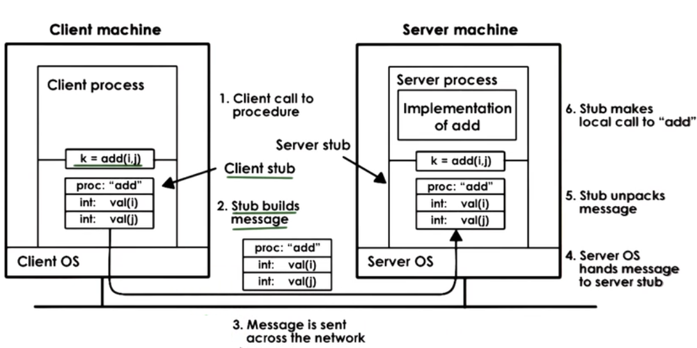
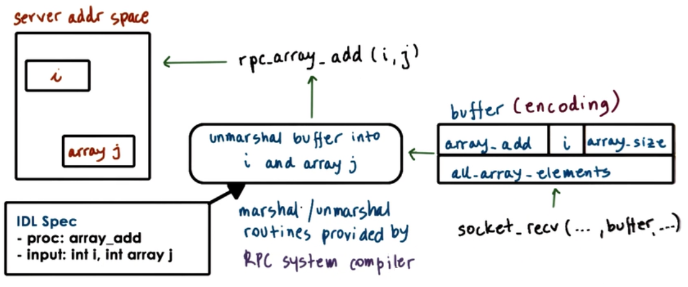

Remote Procedure Calls
Example : GetFile App
- Client Server
- Create and init sockets
- Allocate and populate buffers
- Include 'protocol' info
- GetFile, size
- Copy data into buffers
- filename, file
- common steps related to remote IPC
Remote Procedure Calls (RPC)
- Intended to simplify the development of cross address space and cross machine interactions
+ Higher-level interface for data movement and communication
+ Error handling
+ Hiding complexities of cross machine interactions
RPC requirements

- Client/Server interactions
- Procedure Call Interface => RPC
- sync call semantics
- Type checking
- error handling
- packet bytes interpretation
- Cross machine conversion
- e.g. big/little endian
- Higher level protocol
- access control, fault tolerance, different transport protocols
Structure of RPC

RPC Steps:
(-1.) register : server registers procedure, arg types, location
(0.) bind : client finds and binds to desired server
- call : client make RPC call; control passed to stub, client code blocks
- marshal : client stub "marshals" args (serialize args into buffer)
- send : client sends message to server
- receive : server receives message; passes message to server stub; access control
- unmarshal : server stub "unmarshals" args (extract args from buffer)
- actual call : server stub calls local procedure implementation
- result : server performs operation and computes result of RPC operation
(same on return <=)
Interface definition Language (IDL)
- Used to describe the interface the server expects
- procedure name, args, 2 result types
- version number
RPC can use IDL that is
- Language agnostic
- XDR in SunRPC
- Language specific
- Java in JavaRMI
Marshalling

Unmarshalling

Marshalling/Unmarshalling routines are provided by RPC system compiler.
Binding and Registry
- Client determines
- which server to connect to?
- service name. version number
- how to connect to that server?
- IP address, network protocol
- which server to connect to?
- Registry : database of available services
- search for service name to find server(which) and contact details(how)
- distributed
- any RPC service can register
- machine-specific
- for services running on same machine
- clients must know machine addresses
- registry provides port number needed for connection
- Who can provide a service?
- lookup registry for image processing
- What services do they provide?
- compress/filter.. version number => IDL
- How will they ship package?
- TCP / UDP -> registry
Pointers
- Procedure interface : foo(int,int)
- in Local Calls : foo(x,y) => okay
- in Remote Calls : foo(x,y) => ?
here, y points to location in caller address space
- Solutions:
- No pointers
- Serialize pointers; copy referenced ("points to") data structure to send buffer
Handling Partial Failures
- Special RPC error notification (signal, exception..)
- Catch all possible ways in which RPC can (partially) fail
RPC Design choice
- Binding => How to find the server
- IDL => How to talk to server; how to package data
- Pointers as args => Disallow or serialize pointer data
- Partial failures => Special error notifications